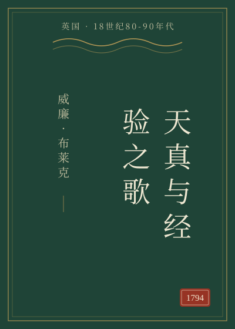
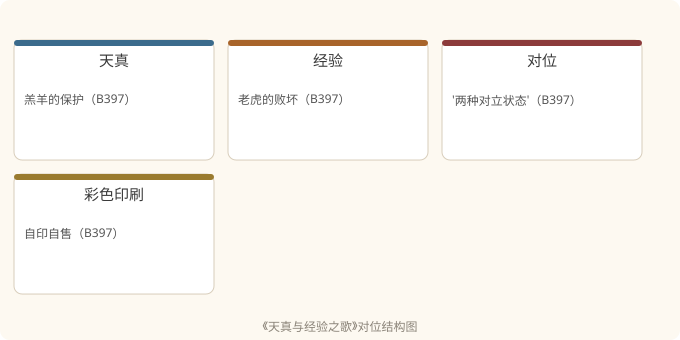

天真与经验之歌
一、基本信息
| 作者 | 威廉·布莱克 |
|---|---|
| 成书/出版 | 1789/1794年（Britannica B397：Songs of Innocence (1789) 与 Songs of Experience (1794)——1794年合刊全题'Shewing the Two Contrary States of the Human Soul'） William Blake — Encyclopaedia Britannica（百科全书） |
| 国别/地区 | 英国 |
| 时代 | 近代 · 18世纪80-90年代 |
| 体裁 | 诗集（彩色印刷） |
| 语言 | 英语 |

《天真与经验之歌》对位结构图（主题·结构图）
二、创作背景
Britannica（B397）：1794年合刊全题'Songs of Innocence and of Experience: Shewing the Two Contrary States of the Human Soul'（展示人类灵魂的两种对立状态）。
Britannica（B397）：'The Lamb'与'The Tyger'分别为纯真之保护与败坏的象征。
Britannica（B397）：彩色印刷——'etched, printed, coloured, stitched, and sold'自印自售（妻 Catherine 协助）。
三、内容脉络
（通说待核）'羔羊'与'老虎'：同一造物主的两面。
（通说待核）《扫烟囱的孩子》两版本的对位。
四、主要人物表
| 人物 | 身份 | 说明 |
|---|---|---|
| 羔羊/老虎 | 纯真与经验的象征 | （B397：symbols of innocence's protection and corruption） |
五、主题与艺术特点
- '人类灵魂的两种对立状态'（B397）。
- 羔羊/老虎的象征对位（B397）。
- 自印自售的艺术革命（B397：illuminated printing）。
六、影响与评论
- Britannica：'Shewing the Two Contrary States of the Human Soul'（B397）。
William Blake — Encyclopaedia Britannica（百科全书） - Britannica：Gilchrist 1863年传记后声名复苏（B397 交叉）。
William Blake — Encyclopaedia Britannica（百科全书）
七、阅读建议
难点
- '彩色印刷'的图文合体。
- 两版的对位阅读。
- 《天真与经验之歌》中译本（人民文学等——通说待核）。
- 英文原版（公有领域）。
布莱克首选；与《耶路撒冷》对读。
八、待核实
- 《羔羊》《老虎》细节核对（B397已载象征定位）。
- 1789/1794年版式差异待核。
- 'Milton'中'Jerusalem'歌词（B397已载）核对。
本页主要来源
威廉·布莱克的其他收录作品：天真与经验之歌